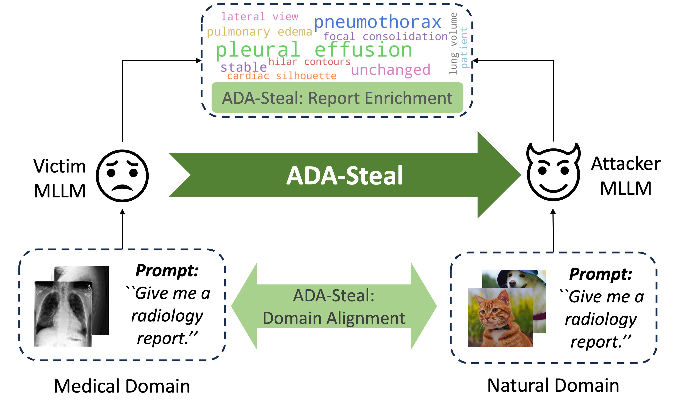
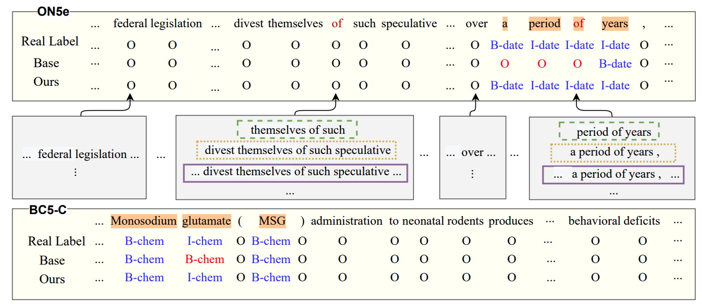
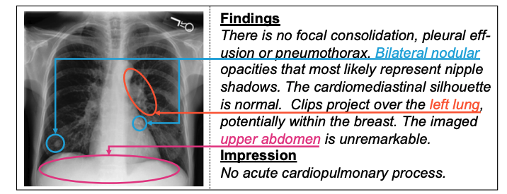
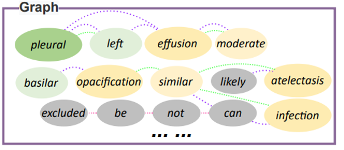

|
Yaling Shen (沈雅龄)
I am an incoming PhD student at the Monash Medical AI Group, supervised by A/Prof. Zongyuan Ge and Dr. Lizhen Qu. Previously, I received my Master's degree from the Technical University of Munich, where I conducted my thesis under the supervision of Prof. Nassir Navab. Before that I completed my Bachelor's degree from the Chinese University of Hong Kong, Shenzhen, working closely with Prof. Xiang Wan at Shenzhen Research Institute of Big Data (SRIBD).
My research focus is on AI in healthcare, specifically the development of large language models (LLMs) and multimodal large language models (MLLMs) for the medical domain. My future work will focus on mental health and dementia.
Email /
Scholar /
LinkedIn /
GitHub
|
|
News
[12-2024] The extended version of my Master's thesis was accepted to AAAI 2025 as an Oral paper.
[07-2024] I successfully defensed master's thesis at CAMP with the highest grade, 1.0.
[11-2023] I began my master's thesis at Bosch Center for Artificial Intelligence (BCAI).
|
|

|
Medical Multimodal Model Stealing Attacks via Adversarial Domain Alignment
Yaling Shen*,
Zhixiong Zhuang*,
Kun Yuan,
Maria-Irina Nicolae,
Nassir Navab,
Nicolas Padoy
Mario Fritz,
AAAI, 2025 (Oral Presentation)
arXiv
Adversarial Domain Alignment (ADA-Steal) is the first stealing attack against medical multimodal large language models without any access to medical data.
|
|

|
Hero-Gang Neural Model For Named Entity Recognition
Jinpeng Hu,
Yaling Shen,
Yang Liu,
Xiang Wan,
Tsung-Hui Chang
NAACL, 2022
arXiv /
Code
Hero-Gang neural model is designed to leverage both global and local information to promote named entity recoginition (NER).
|
|

|
Cross-modal memory networks for radiology report generation
Zhihong Chen,
Yaling Shen,
Yan Song,
Xiang Wan
Tsung-Hui Chang
ACL, 2021
arXiv
/
Code
Cross-modal memory networks (CMN) are proposed to enhance the encoder-decoder framework for radiology report generation.
|
|

|
Word Graph Guided Summarization for Radiology Findings
Jinpeng Hu,
Jianling Li,
Zhihong Chen,
Yaling Shen,
Yan Song,
Xiang Wan,
Tsung-Hui Chang
ACL findings, 2021
arXiv
/
Code
Word Graph guided Summarization model (WGSum) is designed to summarize report impressions from the corresponding detailed radiology findings with word graphs.
|
|
{kind=link}